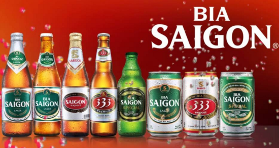

Bia Sài Gòn

BACK
Thông tin chung :
Chủng loại sản phẩm: Bia Lager.
Dung tích: 330ml.
Thành phần: Nước, Malt, Hops.
Bao bì: đóng trong chai thủy tinh màu xanh, 20 chai/két nhựa và 24 chai/thùng carton.
Hướng dẫn sử dụng: Ngon hơn khi uống lạnh, tốt nhất ở 10 – 12 độ C.
Hướng dẫn bảo quản:
Bảo quản nơi khô ráo và thoáng mát.
Tránh tiếp xúc trực tiếp với nguồn nóng hoặc ánh sáng mặt trời.
Số công bố chất lượng:
Tiêu chuẩn TCCS 3 : 200